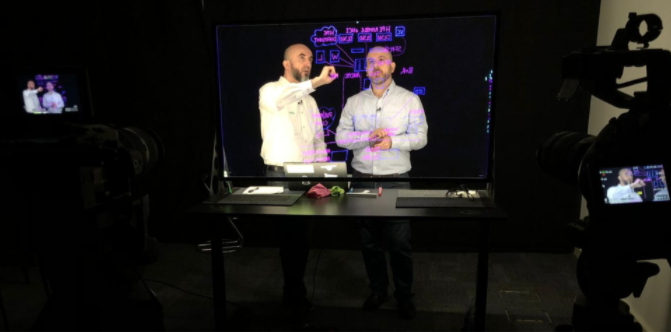
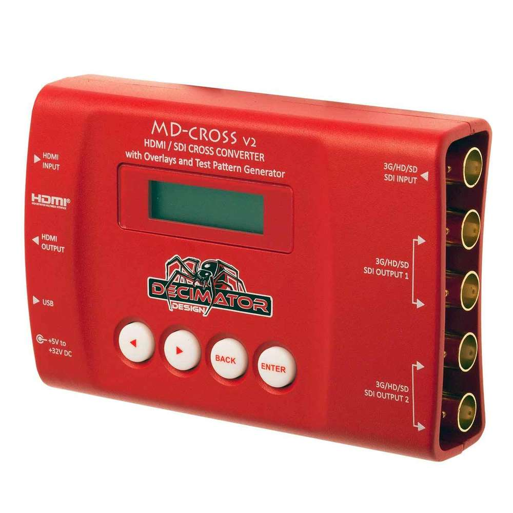
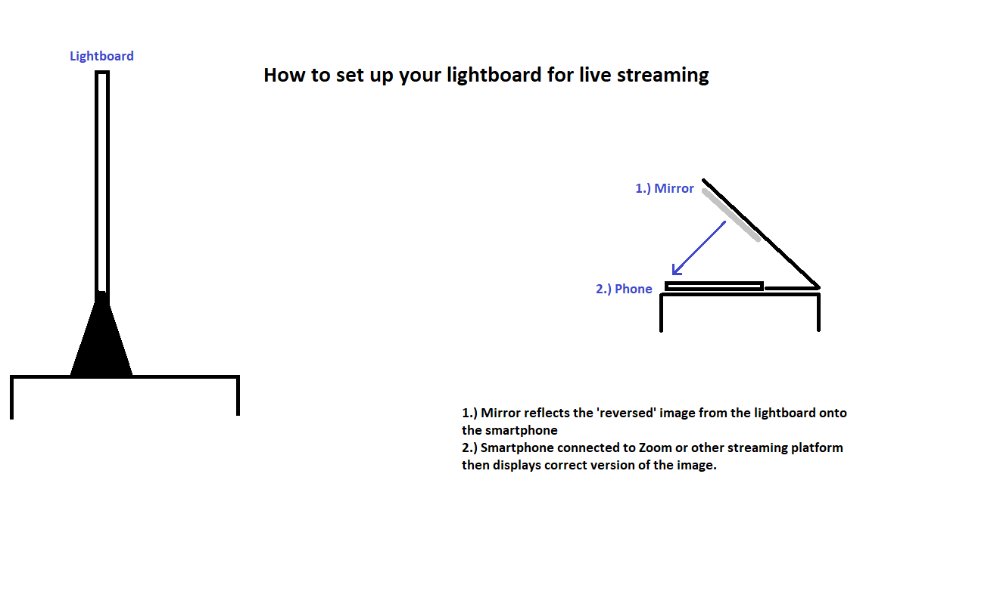
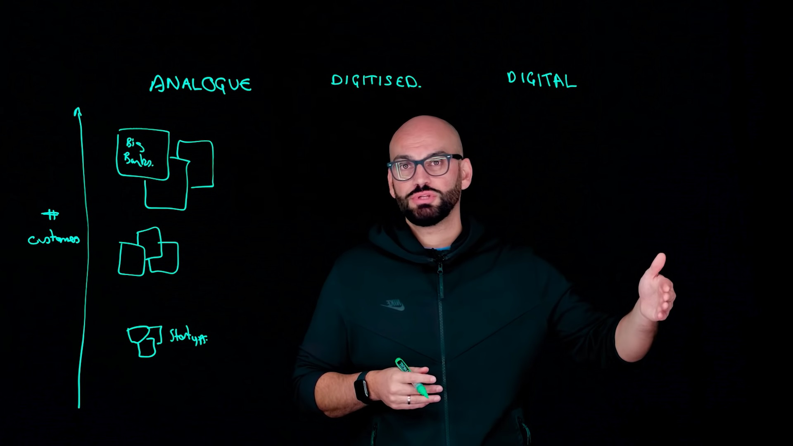

Wie man das Learning-Glas verwendet
Studio Konfiguration
- Das Lightboard ist auf einem motorisierten Tisch montiert, so dass es an die Größe des Moderators angepasst werden kann.
- Idealerweise ein dunkler Aufnahmeraum oder ein professionelles Studio.
- Es wird keine Extra-Beleuchtung benötigt.
- Ansteckmikrofone, die eine hochwertige Tonaufnahme und den Komfort des Moderators gewährleisten.
- Ein Setup mit zwei Kameras ermöglicht gleichzeitig eine breite und eine nahe Aufnahme. Dies liefert Möglichkeiten bei der späteren Bearbeitung. Eine Kamera kann aber auch noch sehr effektiv arbeiten.
- Das Bild wird in der Postproduktion "gespiegelt", so dass der Text richtig erscheint.
- • Das Studio-Setup funktioniert am besten für das größere LearningGlas, erfahren Sie mehr darüberhier!

Live-Streaming
- Wenn Sie von zu Hause live übertragen, platzieren Sie Ihr Telefon auf dem mitgelieferten Ständer.
- Der Spiegel reflektiert das Umkehrbild vom LearningGlas auf Ihr Telefon.
- Verbinden Sie das Smartphone mit einer Streaming- oder Videoanrufplattform, die den Zuschauern die richtige Version des Bildes anzeigt.

Zu Hause
- Positionieren Sie Ihr Learning-Glas auf einem Schreibtisch oder Ständer.
- Justieren Sie die Höhe des LearningGlas, um den Präsentator richtig einzurahmen
- Schließen Sie Vorhänge und Jalousien und machen Sie den Raum so dunkel wie möglich
- Platzieren Sie Ihr Smartphone auf dem mitgelieferten Ständer in dem passenden Abstand, um das Ligthboard zu filmen.
- Das kleinere, tragbarere LearningGlas eignet sich am besten für den Setup zu Hause,hier erfahren Sie mehr über das Produkt!
Live Streaming
- When live streaming at home place your phone on the provided stand.
- The mirror will reflect the revered image from the learning glass to your phone.
- Connect the smartphone to a streaming or video calling platform which displays the correct version of the image to audiences.

Bewährte Praktiken
- Tragen Sie dunkle Kleidung in einer einfarbigen Farbe, ohne Schrift oder Muster, die die Zuschauer ablenken.
- Entscheiden Sie vorher, wo Sie wichtige Punkte, Zeichnungen oder Grafiken auf die Tafel schreiben werden. (Schreiben Sie nicht vor Ihrem Gesicht.)
- Verwenden Sie normale Gesten und Ihren eigenen Präsentationsstil.
- Schauen Sie regelmäßig auf die Kamera, um die Wahrnehmung des Augenkontakts zu fördern
- Seien Sie zuversichtlich! Nutzen Sie Ihre Kreativität! Seien Sie vor allem Sie selbst!
